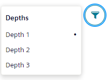
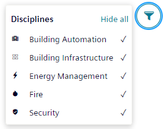
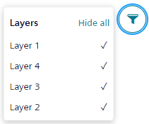

Filtering within a Graphic
Using a filter helps you view and focus on parts of the graphic that are of current interest. Filter menus are available for depths, disciplines, or layers of a graphic. However, the configuration of the graphic determines which filter menu is available.
The Filter menu allows you to use the Show All and Hide All options to toggle between the visibility of all items in the Layers or Discipline menus.
The filter selections do not save when you navigate to another graphic in System Browser. However, the selection is retained when you switch back and forth between the active graphic and the Textual Viewer.
When the user switches back from the textual viewer to the graphics viewer of the same graphic, then the saved filter settings of that graphic is restored.
Access the filtering features by selecting the Filter icon . The following menus may be available:
Depths: This menu displays when the graphic has more than one depth. You can select one depth at a time to display in the graphic. The active depth that is displayed has the Selection indicator next to it.

Disciplines: Displays when layers are associated with disciplines during configuration. Select the disciplines you want to display in the graphic; grayed out disciplines do not display.

Layers: Displays when there are multiple layers, no depths, and no configured disciplines. Select the layers to display. As you do so, a checkmark displays next to the layer.
